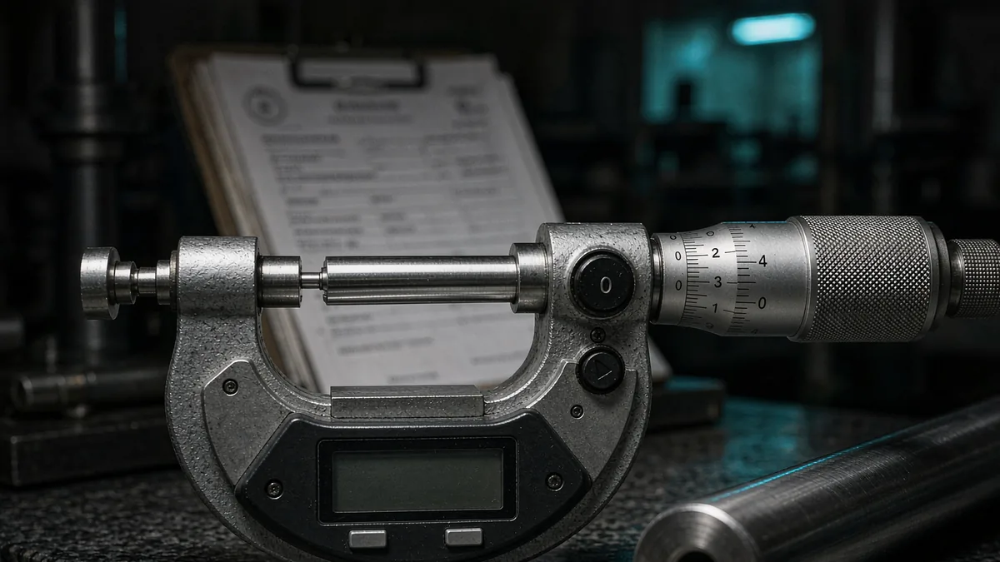

Specifying titanium: certificates, tolerances and testing
Most disputes over titanium are not about quality. They are about a purchase order that named the grade and nothing else — no condition, no tolerance class, no test list, no certificate type.
A titanium purchase order has to survive four separate readers: the mill that rolls the material, the inspection department that certifies it, the forwarder that ships it, and the buyer's incoming inspection that may reject it. Each of them reads a different clause. If the clause is missing, each of them fills the gap with a default — and the defaults do not match.
This is the checklist we use before quoting, in the order the questions usually come up.
In this guide
The purchase order checklist
| Item | What to state | Why it matters |
|---|---|---|
| Product form | Plate, sheet, strip, bar, tube, pipe, forging, fastener | Each has its own ASTM standard and tolerance table |
| Grade | Gr.1 / 2 / 5 / 7 / 12 / 23, or GB / AMS designation | Sets chemistry and minimum mechanical properties |
| Standard | ASTM B265, B348, B338, B381, B861/862 — with edition if required | Defines the test and tolerance clauses |
| Dimensions | Thickness × width × length, OD × wall × length, or drawing | Determines rolling route, yield and price |
| Quantity | Net weight or piece count, with tolerance | Drives the melt size and the MOQ band |
| Condition | Annealed, cold rolled, hot rolled, pickled, ground, stress relieved | Changes machinability, flatness and price |
| Testing | Tension, bend, flatten, hydro, UT, eddy current, PMI, hardness, grain size | Determines whether the certificate is accepted |
| Certificate | EN 10204 3.1, or 3.2 with a named inspector | Determines who signs and who is liable |
| Marking | Grade, heat number, size, standard, mill mark; stamping or stencil | Traceability at incoming inspection and on site |
| Packing | Sea-worthy case, interleaved, edge-protected, max bundle weight | Titanium damages easily in transit and is expensive to rework |
| Delivery terms | FOB / CIF / EXW, port, destination | Defines where risk transfers |

Condition and temper: the clause buyers forget
"Gr.2 plate to ASTM B265" describes a chemistry and a property floor. It does not describe what the material has been through. Annealed, cold rolled, hot rolled and stress relieved material can all satisfy B265 and still behave completely differently on the shop floor: cold-rolled sheet is flatter and stronger but springs back; hot-rolled plate carries a wider thickness tolerance and more residual stress; unannealed material machines like a different metal.
Two clauses are worth adding whenever the part is machined or formed: the condition (annealed is the usual default, but say it), and flatness or straightness where the downstream operation is sensitive to it. Both are cheap to specify before rolling and expensive to fix afterwards.
EN 10204 3.1 versus 3.2
Both are inspection documents; the difference is who signs and what that signature certifies.
| EN 10204 3.1 | EN 10204 3.2 | |
|---|---|---|
| Issued by | The manufacturer's independent inspection department | The manufacturer, countersigned by an authorised inspector independent of production |
| Relationship to the goods | Certifies the actual delivered lot, by heat number | Certifies the actual delivered lot, with third-party witness or review |
| Typical use | General industrial, chemical, most export orders | Pressure equipment, regulated industries, customer specification |
| Lead time effect | None | Adds inspection scheduling; must be agreed before production |
| Cost | Included | Charged by the inspection body |
A 3.1 certificate is not a lesser document — for most industrial buyers it is exactly what is required, and it carries full heat-number traceability. What it does not carry is a signature from someone outside the manufacturer. If the end user's specification says 3.2, that has to be in the enquiry: it cannot be retro-fitted to a heat that has already been rolled and packed.
What can be tested, and what it costs
Standard mill testing covers chemistry, tensile properties and, where the standard requires it, bend or flatten tests. Beyond that, the useful options are:
- Hydrostatic test — mandatory for much tube and pipe; state test pressure and duration, or the standard clause.
- Non-destructive testing — ultrasonic for plate and bar, eddy current or ultrasonic for tube. Specify the acceptance level, not just "UT".
- PMI (positive material identification) — verifies alloy identity on the finished item; cheap insurance against a mixed bundle.
- Hardness — often used as a proxy for heat treatment condition; specify the scale and the limits.
- Grain size / microstructure — relevant for aerospace and for material that will be formed or welded critically.
- Hydrogen content — worth specifying where the material will be pickled or used in a hydrogen-charging environment.
Tolerances, edges and surface
Every ASTM product standard contains its own tolerance table, indexed by size and width. The tolerances are generally workable rather than tight, and buyers who need tighter usually discover it after the first delivery. If a part is machined from plate and the finished thickness is close to the nominal, check the tolerance band before ordering — or order a machining allowance.
Edge condition belongs in the same clause. Plate can be supplied with mill edge, sheared edge or machined edge; sheet can be slit or cut to length. Surface can be as-rolled, pickled, descaled, bright annealed or ground. Each is a legitimate product, and the price differences between them are larger than most buyers expect.
Marking, packing and export documents
Marking should tie the physical piece to the certificate: grade, heat number, size and standard, applied by stencil or stamp in a position that survives handling. Where a customer's procedure forbids stamping (thin sheet, fatigue-critical parts), say so and specify the alternative — labelling with a durable tag.
For export, the standard document set is commercial invoice, packing list, certificate of origin, mill test certificate, and the transport document. Titanium sits under HS heading 8108, with the six-digit subheading depending on whether the goods are unwrought, waste and scrap, or finished articles — the forwarder will normally confirm the code against the invoice description. Insurance and any pre-shipment inspection certificate should be agreed in the contract rather than discovered at the port.
Red flags in a quotation
- "Equivalent grade" without a chemistry table. Equivalence is a claim; the chemistry is the evidence.
- No heat number on the offer. Without a heat number there is no traceability, and no 3.1 certificate is possible.
- A certificate that does not cite the standard clause. A one-page sheet of numbers is not a mill certificate.
- A price far below the market. Titanium scrap and sponge set a floor; a large discount usually means a different grade, a different condition, or a paperwork problem.
- Refusal of third-party inspection. A supplier that will not accept a pre-shipment inspection is telling you something.
Engineering guidance only. This checklist summarises common procurement practice and the structure of the relevant standards. Contractual requirements, acceptance criteria and document types are confirmed per order in the quotation and the contract.
Our standard supply is mill certificate to EN 10204 3.1 with heat-number traceability, and 3.2 or independent inspection when agreed before production. Material is offered as plate and sheet, bar and rod, tube and pipe, fasteners and forgings or machined parts. Send the specification you are working to and we will quote against it, clause by clause.
Need a quote for titanium?
Send the product form, grade, dimensions and destination — we confirm availability, standards and documents before you commit.